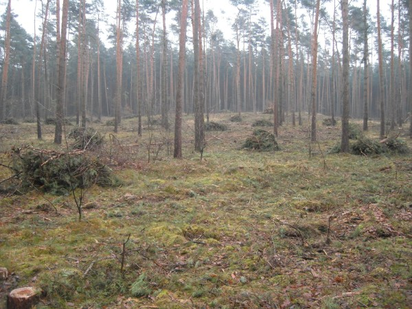
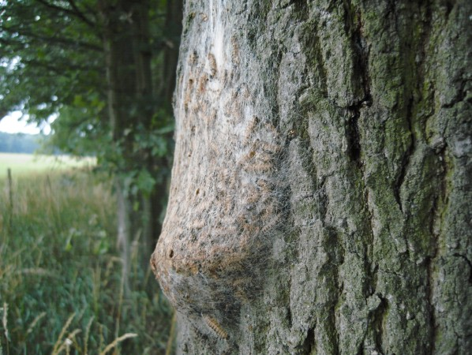
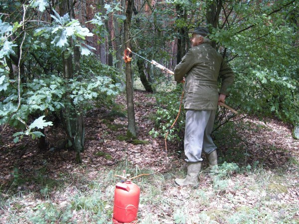
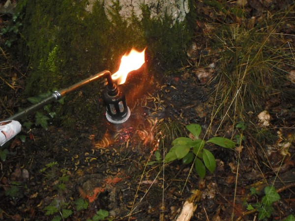
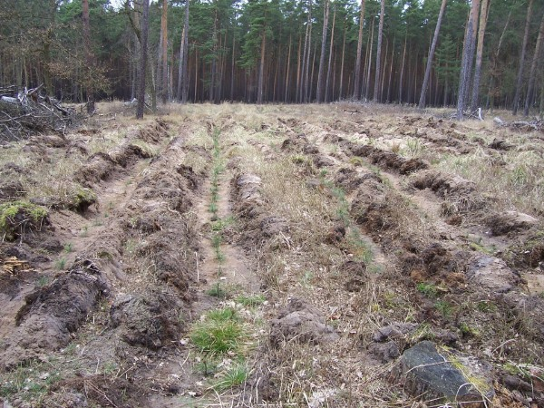

Waldschutz
Ein gepflegter Wald ist widerstandsfähig. Neue Arten und der Klimawandel bringen aber neue Probleme.

Spätblühende Traubenkirsche
Die Traubenkirsche (Prunus serotina) stammt aus Nordamerika, wächst bis zu zwei Meter im Jahr und erstickt junge Bäume. Abschneiden hilft nicht: Aus einem Trieb werden mindestens drei neue. Wir reißen sie deshalb mit Wurzel aus.
Die Klare’sche Ausziehplatte
Statt eine Kette um jede Pflanze zu legen, wird die Platte nur eingehakt, der Schlepper zieht die Pflanze heraus. Sie ist aus lasergeschnittenem 20-mm-Stahl, die Kette hält rund 10 Tonnen. Den Bauplan geben wir kostenlos weiter, ohne Haftung.
Nach dem Einhaken Abstand halten: Reißt der Baum durch, kann die Platte hochschleudern.

Eichenprozessionsspinner
Die Raupen fressen Eichen kahl, ihre Brennhaare sind auch für Menschen gefährlich. Wir flammen die Nester mit einem verlängerten Brenner ab: erst die losen Härchen, dann das Nest selbst. 2011 waren es rund 200 Nester, 2012 war der Erfolg deutlich zu sehen.



Sandrohr
Das Gras (Calamagrostis epigejos) überwuchert junge Kulturen. Wir mähen es mit der Motorsense, bis die Bäume groß genug sind. Totalherbizide wirken, selektive Mittel bisher kaum.


Holz direkt aus dem Wald
Ob Kaminholz, Bohlen nach Maß oder Rundholz in Lkw-Mengen: Rufen Sie uns an, wir beraten Sie gern.
Kontakt aufnehmen